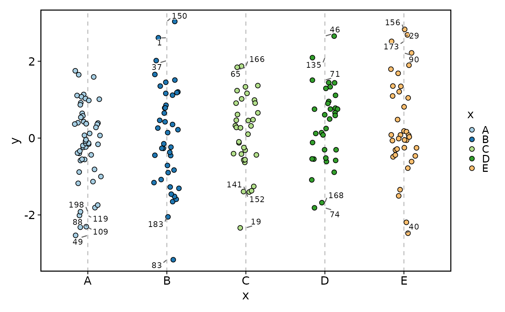
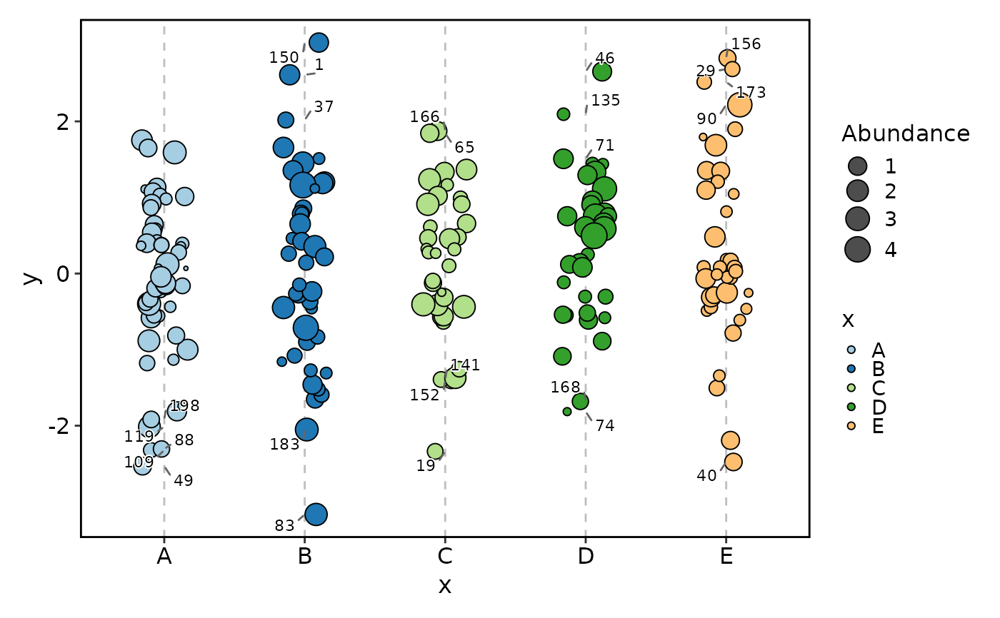
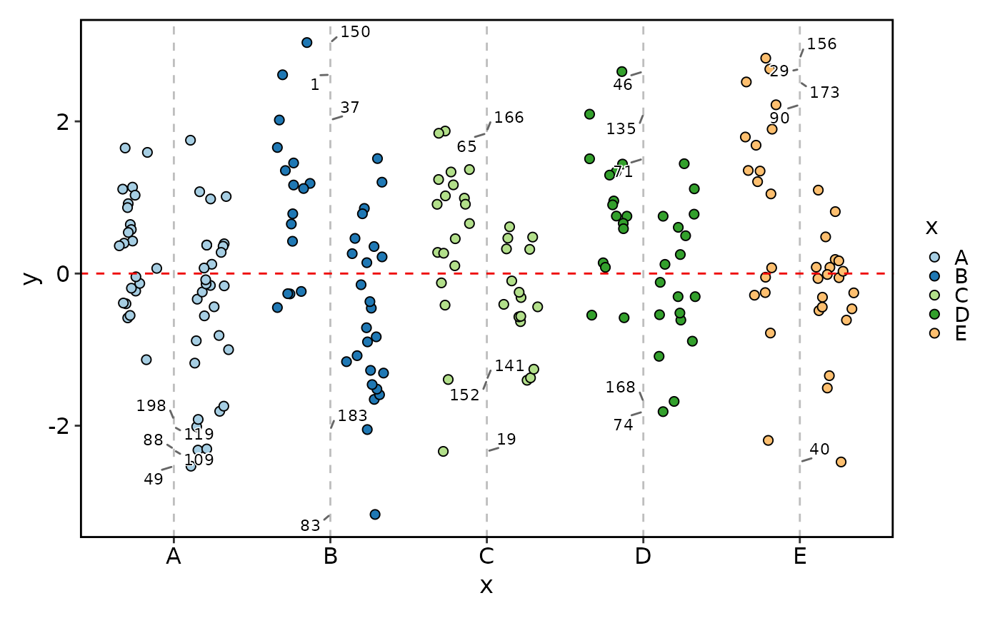
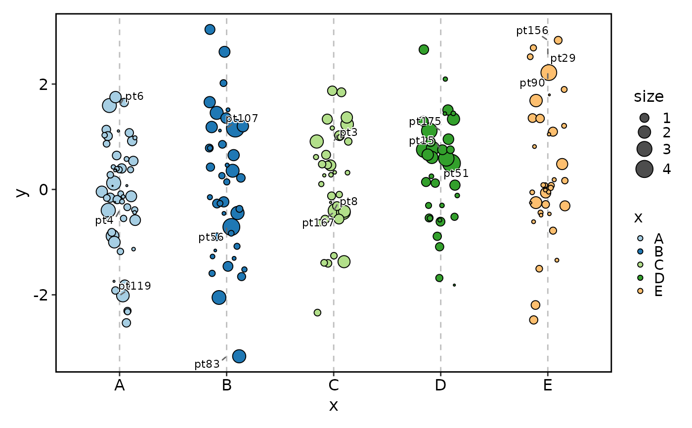
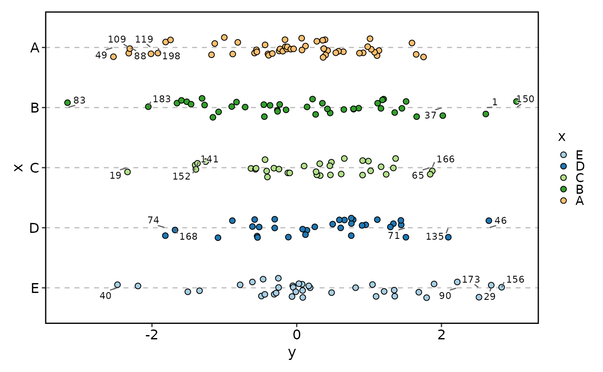

Jittered point plot with optional background, highlight, labels and faceting.
Usage
JitterPlot(
data,
x,
x_sep = "_",
y = NULL,
in_form = c("long", "wide"),
split_by = NULL,
split_by_sep = "_",
sort_x = c("none", "mean_asc", "mean_desc", "mean", "median_asc", "median_desc",
"median"),
flip = FALSE,
keep_empty = FALSE,
group_by = NULL,
group_by_sep = "_",
group_name = NULL,
x_text_angle = 0,
theme = "theme_this",
theme_args = list(),
palette = "Paired",
palcolor = NULL,
alpha = 1,
aspect.ratio = NULL,
legend.position = "right",
legend.direction = "vertical",
shape = 21,
border = "black",
size_by = 2,
size_name = NULL,
size_trans = NULL,
y_nbreaks = 4,
jitter_width = 0.5,
jitter_height = 0,
y_max = NULL,
y_min = NULL,
y_trans = "identity",
add_bg = FALSE,
bg_palette = "stripe",
bg_palcolor = NULL,
bg_alpha = 0.2,
add_hline = NULL,
hline_type = "solid",
hline_width = 0.5,
hline_color = "black",
hline_alpha = 1,
labels = NULL,
label_by = NULL,
nlabel = 5,
label_size = 3,
label_fg = "black",
label_bg = "white",
label_bg_r = 0.1,
highlight = NULL,
highlight_color = "red2",
highlight_size = 1,
highlight_alpha = 1,
facet_by = NULL,
facet_scales = "fixed",
facet_ncol = NULL,
facet_nrow = NULL,
facet_byrow = TRUE,
title = NULL,
subtitle = NULL,
xlab = NULL,
ylab = NULL,
seed = 8525,
combine = TRUE,
nrow = NULL,
ncol = NULL,
byrow = TRUE,
axes = NULL,
axis_titles = axes,
guides = NULL,
design = NULL,
...
)Arguments
- data
A data frame.
- x
A character string of the column name to plot on the x-axis. A character/factor column is expected. If multiple columns are provided, the columns will be concatenated with
x_sep.- x_sep
A character string to concatenate the columns in
x, if multiple columns are provided. Whenin_formis "wide",xcolumns will not be concatenated.- y
A character string of the column name to plot on the y-axis. A numeric column is expected. When
in_formis "wide",yis not required. The values underxcolumns will be used as y-values.- in_form
A character string to specify the input data type. Either "long" or "wide".
- split_by
The column(s) to split data by and plot separately.
- split_by_sep
The separator for multiple split_by columns. See
split_by- sort_x
A character string to specify the sorting of x-axis, chosen from "none", "mean_asc", "mean_desc", "mean", "median_asc", "median_desc", "median".
nonemeans no sorting (as-is).mean_ascsorts the x-axis by ascending mean of y-values.mean_descsorts the x-axis by descending mean of y-values.meanis an alias formean_asc.median_ascsorts the x-axis by ascending median of y-values.median_descsorts the x-axis by descending median of y-values.medianis an alias formedian_asc.
- flip
A logical value to flip the plot.
- keep_empty
A logical value to keep the empty levels in the x-axis.
- group_by
A character string to dodge the points.
- group_by_sep
A character string to concatenate the columns in
group_by, if multiple columns are provided.- group_name
A character string to name the legend of dodge.
- x_text_angle
A numeric value specifying the angle of the x-axis text.
- theme
A character string or a theme class (i.e. ggplot2::theme_classic) specifying the theme to use. Default is "theme_this".
- theme_args
A list of arguments to pass to the theme function.
- palette
A character string specifying the palette to use. A named list or vector can be used to specify the palettes for different
split_byvalues.- palcolor
A character string specifying the color to use in the palette. A named list can be used to specify the colors for different
split_byvalues. If some values are missing, the values from the palette will be used (palcolor will be NULL for those values).- alpha
Point transparency.
- aspect.ratio
A numeric value specifying the aspect ratio of the plot.
- legend.position
A character string specifying the position of the legend. if
waiver(), for single groups, the legend will be "none", otherwise "right".- legend.direction
A character string specifying the direction of the legend.
- shape
A numeric value to specify the point shape. Shapes 21–25 have borders; border behavior is controlled by
border.- border
A logical or character value to specify the border of points when the shape has border (21–25). If TRUE, border color follows the point color (same as fill). If a color string, uses that constant border color. If FALSE, no border.
- size_by
A numeric column name or a single numeric value for the point size. When a column, sizes are scaled (see scatter plots).
- size_name
Legend title for size when
size_byis a column.- size_trans
A function or a name of a global function to transform
size_by(whensize_byis a column). The legend shows original (untransformed) values.- jitter_width, jitter_height
Jitter parameters.
- y_max, y_min
Numeric or quantile strings ("q95", "q5") for y limits computation (used for fixed coord).
- y_trans, y_nbreaks
Axis settings.
- add_bg
A logical value to add background to the plot.
- bg_palette
A character string to specify the palette of the background.
- bg_palcolor
A character vector to specify the colors of the background.
- bg_alpha
A numeric value to specify the transparency of the background.
- add_hline
Add one or more horizontal reference lines at the given y-value(s).
- hline_type
The line type for the horizontal reference line(s).
- hline_width
The line width for the horizontal reference line(s).
- hline_color
The color for the horizontal reference line(s).
- hline_alpha
The alpha for the horizontal reference line(s).
- labels
A vector of row names or indices to label the points.
- label_by
A character column name to use as the label text. If NULL, rownames are used.
- nlabel
Number of points to label per x-group when
labelsis NULL (top by y^2 + size^2).- label_size, label_fg, label_bg, label_bg_r
Label aesthetics.
- highlight, highlight_color, highlight_size, highlight_alpha
Highlighted point options.
- facet_by
A character string specifying the column name of the data frame to facet the plot. Otherwise, the data will be split by
split_byand generate multiple plots and combine them into one usingpatchwork::wrap_plots- facet_scales
Whether to scale the axes of facets. Default is "fixed" Other options are "free", "free_x", "free_y". See
ggplot2::facet_wrap- facet_ncol
A numeric value specifying the number of columns in the facet. When facet_by is a single column and facet_wrap is used.
- facet_nrow
A numeric value specifying the number of rows in the facet. When facet_by is a single column and facet_wrap is used.
- facet_byrow
A logical value indicating whether to fill the plots by row. Default is TRUE.
- title
A character string specifying the title of the plot. A function can be used to generate the title based on the default title. This is useful when split_by is used and the title needs to be dynamic.
- subtitle
A character string specifying the subtitle of the plot.
- xlab
A character string specifying the x-axis label.
- ylab
A character string specifying the y-axis label.
- seed
The random seed to use. Default is 8525.
- combine
Whether to combine the plots into one when facet is FALSE. Default is TRUE.
- nrow
A numeric value specifying the number of rows in the facet.
- ncol
A numeric value specifying the number of columns in the facet.
- byrow
A logical value indicating whether to fill the plots by row.
- axes
A string specifying how axes should be treated. Passed to
patchwork::wrap_plots(). Only relevant whensplit_byis used andcombineis TRUE. Options are:'keep' will retain all axes in individual plots.
'collect' will remove duplicated axes when placed in the same run of rows or columns of the layout.
'collect_x' and 'collect_y' will remove duplicated x-axes in the columns or duplicated y-axes in the rows respectively.
- axis_titles
A string specifying how axis titltes should be treated. Passed to
patchwork::wrap_plots(). Only relevant whensplit_byis used andcombineis TRUE. Options are:'keep' will retain all axis titles in individual plots.
'collect' will remove duplicated titles in one direction and merge titles in the opposite direction.
'collect_x' and 'collect_y' control this for x-axis titles and y-axis titles respectively.
- guides
A string specifying how guides should be treated in the layout. Passed to
patchwork::wrap_plots(). Only relevant whensplit_byis used andcombineis TRUE. Options are:'collect' will collect guides below to the given nesting level, removing duplicates.
'keep' will stop collection at this level and let guides be placed alongside their plot.
'auto' will allow guides to be collected if a upper level tries, but place them alongside the plot if not.
- design
Specification of the location of areas in the layout, passed to
patchwork::wrap_plots(). Only relevant whensplit_byis used andcombineis TRUE. When specified,nrow,ncol, andbyroware ignored. Seepatchwork::wrap_plots()for more details.- ...
Additional arguments.
Value
The Jitter plot(s).
When split_by is not provided, it returns a ggplot object.
When split_by is provided, it returns a object of plots wrapped by patchwork::wrap_plots if combine = TRUE;
otherwise, it returns a list of ggplot objects.
Examples
# \donttest{
set.seed(8525)
n <- 200
x <- sample(LETTERS[1:5], n, replace = TRUE)
group <- sample(c("G1", "G2"), n, replace = TRUE)
size <- rexp(n, rate = 1)
id <- paste0("pt", seq_len(n))
y <- rnorm(n, mean = ifelse(group == "G1", 0.5, -0.5)) +
as.numeric(factor(x, levels = LETTERS[1:5]))/10
df <- data.frame(
x = factor(x, levels = LETTERS[1:5]),
y = y,
group = group,
size = size,
id = id
)
# Basic
JitterPlot(df, x = "x", y = "y")

# Map size with transform; legend shows original values
JitterPlot(df, x = "x", y = "y", size_by = "size", size_name = "Abundance",
size_trans = sqrt)

# Dodge by group and add a horizontal line
JitterPlot(df, x = "x", y = "y", group_by = "group",
add_hline = 0, hline_type = "dashed", hline_color = "red2")

# Label top points by distance (y^2 + size^2)
JitterPlot(df, x = "x", y = "y", size_by = "size", label_by = "id", nlabel = 3)

# Flip axes
JitterPlot(df, x = "x", y = "y", flip = TRUE)

# }